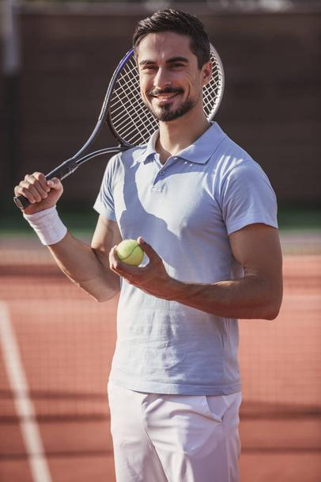
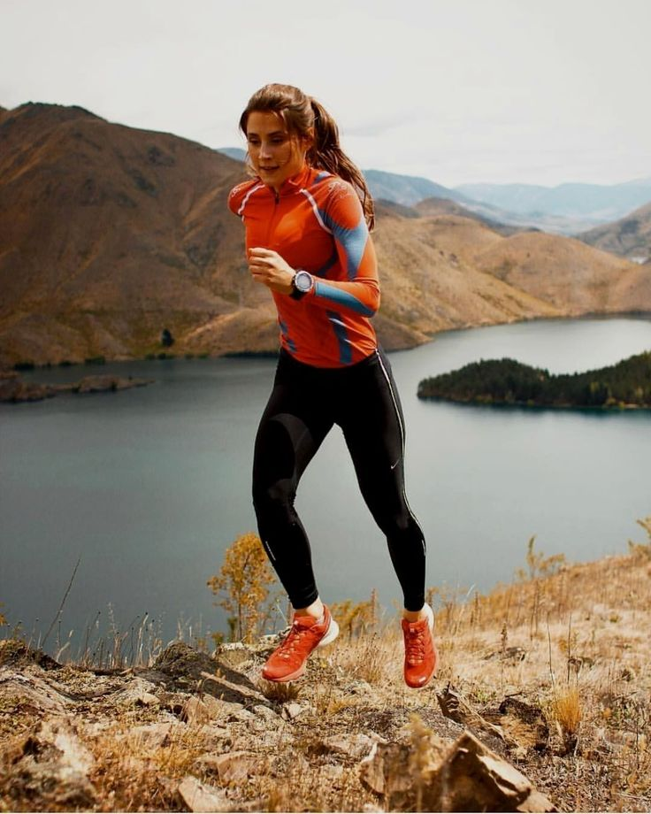

Target Audience
The target audience is a group of sports clubs that specialize in renting fields for different sports. The goal is for the union of these clubs to have an impact on the success of all the participants, by sharing a website where users will find an available field, and will be able to set shifts for rent.
Carlos is a tennis player who had to retire due to an injury. Tennis is still his passion, so he will open a club to teach young people for competition, and will also rent tennis courts for adults who just want to have fun. Since he is only 35 years old, he still has the energy to provide great service to the community. Carlos is new to the business world, and he will need a lot of help, so entering the Sport Chamber Commerce can give him prestige to reach more people.

Wanda has been an athlete since she was very young, and she attended gyms to be in good physical condition. She likes mountaineering, and she frequently prepares to climb some mountain. She recently moved to the city, and she realized that there was no gym with the necessary level for extreme athletes, so she decided to open one. She doesn't know the city very well, and she will need the Sport Chamber Commerce to make herself known. She is 26 years old and dreams of climbing Mount Everest.
